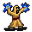

Pangitain¶Where to find Pangitain: Brimhaven: brimhaven_fortune_teller
{ .sprite }
| Type | NPC (can be spoken to; cannot be attacked) |
| Role | Teaches Merchant, Cleave, Treasure Hunter, Dodge, Increased Fortitude, Magic Finder, Weapon Accuracy |
| Found in | Brimhaven |
| Entry ID | brv_fortune_teller |
| Introduced | v0.7.11 |
Quests¶
- The exploded star: stages 60, 62
- Delivery - nondisplay (hidden flag): stage 100
- brv_nondisplay (hidden flag): stages 144, 145, 147, 148, 149, 150, 151
Dialogue simulator¶
Set the quest stages, items and other conditions that apply to your game, then start the conversation with Pangitain. The simulator applies the game's own rules: it performs the same silent checks, offers only the options that would be shown in the game, and applies their effects (quest stages, items handed over, rewards) as the conversation proceeds.
Rules verified against v0.8.18 game code (ConversationController.java) and dialogue data.
Dialogue (48 lines)
What the dialogue says, exactly as in the game files. Lines are listed once; links jump to the line a choice leads to.
brv_fortune_select (silent check: the first matching branch below is taken)
- Next (if reached stage 144 of brv_nondisplay (hidden flag)) → brv_fortune_back
- Next → brv_fortune
brv_fortune_back (silent check: the first matching branch below is taken)
- branch 1 (if carry 10× Piece of bright shining crystal) → brv_fortune_back_10
- branch 2 → brv_fortune_back_2
brv_fortune Pangitain: “Welcome to my house. Please come in.”
- Next → brv_fortune_10
brv_fortune_back_10 Pangitain: “Welcome back. I see that you bring me interesting things that have fallen from the sky.”
- “How do you know?” → brv_fortune_back_12
- “The pieces that I have found in the area of Mt. Galmore? Yes, I have them with me.” → brv_fortune_back_20
brv_fortune_back_2 Pangitain: “Welcome back.”
- Next → brv_fortune_choice
brv_fortune_10 Pangitain: “What has brought you to me? It looks like you might need my help.”
- “What help can you offer?” → brv_fortune_20
- “I am searching...” → brv_fortune_30
- “So you are the one who ordered a 'Crystal Globe'?” (if hand over 1× Crystal globe; reached stage 10 of Delivery; reached stage 110 of Delivery) → brv_wh_delivery_brv_fortune
brv_fortune_back_12 Pangitain: “Sigh. I know many things. How often do I still have to prove it?”
- “Well, OK. What about my fallen stones collection?” → brv_fortune_back_20
brv_fortune_back_20 Pangitain: “You can't do anything useful with them. Give them to me and I'll give you a kingly reward.”
- “Here, you can have them for the greater glory.” (if hand over 10× Piece of bright shining crystal) → brv_fortune_back_30
- “Really? What can you offer?” → brv_fortune_back_50
brv_fortune_choice Pangitain: “Anything more I can help you with?”
- “Please tell me something that you can see about me or my brother Andor. [Give him 100 gold]” (if have 100 gold) → brv_fortune_pre_fortunes
- “I don't have 100 gold to pay you.” → brv_fortune_end_10
- “Maybe I can help you.” → brv_fortune_300
- “Are you the one who ordered a 'Crystal Globe'?” (if hand over 1× Crystal globe; reached stage 10 of Delivery; reached stage 110 of Delivery) → brv_wh_delivery_brv_fortune
brv_fortune_20 Pangitain: “I can see what others can't see.”
- “Really? I am searching...” → brv_fortune_30
brv_fortune_30 Pangitain: “Wait”
- Next → brv_fortune_40
brv_wh_delivery_brv_fortune Pangitain: “Ah yes, I need a new one. My current crystal globe has become a bit cloudy - otherwise I would of course have seen that you would bring me a new globe. Here is the gold for it.” — effects: clears stage 110 of Delivery, sets stage 100 of Delivery - nondisplay (hidden flag), gives 100× Gold coins
- “Do you want to try the crystal ball with me to see if it works?” → brv_wh_delivery_brv_fortune_10
- “Thanks for choosing Facutloni's delivery.” → conversation ends
brv_fortune_back_30 Pangitain: “Thank you. Very wise of you. Indeed. Let - your - wisdom - grow ...” — effects: sets stage 60 of The exploded star
- “I already feel it.” → brv_fortune_back_90
brv_fortune_back_50 Pangitain: “Look here in my chest with my most valuable items, that could transfer their powers to you.”
- Next → brv_fortune_back_52
brv_fortune_pre_fortunes (silent check: the first matching branch below is taken)
- Next (if faction “brv_fortune” ≥ 6) → brv_fortune_come_back_much_later
- Next (if NOT 0 rounds passed since timer “brv_fortune”) → brv_fortune_pre_fortunes_2
- Next (if NOT 1 rounds passed since timer “brv_fortune”) → brv_fortune_come_back_later
- Next → brv_fortune_pre_fortunes_2
brv_fortune_end_10 Pangitain: “Then goodbye. I know you will return some time in the future.”
brv_fortune_300 Pangitain: “Yes, that would be good. I already have an idea. But not now. Please come back later and ask me again.”
- Next → brv_fortune_choice
brv_fortune_40 Pangitain: “I feel that you are on a search... at the beginning of a long and dangerous search for a relative of yours.” — effects: sets stage 144 of brv_nondisplay (hidden flag)
- “I am impressed. Can you tell me more about my brother Andor or me?” → brv_fortune_50
- “That doesn't impress me.” → brv_fortune_end_10
brv_wh_delivery_brv_fortune_10 Pangitain: “You say you want me to help you?”
- “What help can you offer?” → brv_fortune_20
- “I am searching...” → brv_fortune_30
brv_fortune_back_90 Pangitain: “Go now.”
- “Bye.” → conversation ends
brv_fortune_back_52 Pangitain: “Which one do you want to learn more about?”
- “Gem of star precision” → brv_fortune_back_61
- “Wanderer's Vitality” (if skillIncrease fortitude 1) → brv_fortune_back_62
- “Mountainroot gold nugget” → brv_fortune_back_65
- “Shadowstep Favor” → brv_fortune_back_66
- “Starbound grip stone” (if skillIncrease cleave 1) → brv_fortune_back_68
- “Swirling orb of awareness.” → brv_fortune_back_69
brv_fortune_come_back_much_later Pangitain: “I told you all I can see for now. But you can come back to me in a few months when you have had new experiences.”
- Next → brv_fortune_choice
brv_fortune_pre_fortunes_2 (silent check: the first matching branch below is taken) — effects: faction “brv_fortune” +1, gives -100× Gold coins
- Next (if faction “brv_fortune” = 2) → brv_fortunes_set_timer
- Next (if faction “brv_fortune” = 4) → brv_fortunes_set_timer
- Next → brv_fortune_fortunes_select
brv_fortune_come_back_later Pangitain: “I am tired and can't see anything new now. If you come back in a little while maybe I can tell you more.”
- Next → brv_fortune_choice
brv_fortune_50 Pangitain: “It will cost you 100 gold.”
- “[Give him 100 gold]” (if pay 100 gold) → brv_fortune_pre_fortunes_2
- “That is too expensive for me.” → brv_fortune_end_10
brv_fortune_back_61 Pangitain: “Your hand steadies with celestial clarity. Touching the item will permanently increase your weapon accuracy.”
- “Sounds great - I choose this one. [Touch the item]” (if hand over 10× Piece of bright shining crystal) → brv_fortune_back_61b
- “Let me have a look at the other items.” → brv_fortune_back_52
brv_fortune_back_62 Pangitain: “Wanderer's Vitality. You carry the strength of the sky inside you. After touching this item, you will begin to learn how to improve your overall health faster.”
- “Sounds great - I choose this one. [Touch the item]” (if hand over 10× Piece of bright shining crystal) → brv_fortune_back_62b
- “Let me have a look at the other items.” → brv_fortune_back_52
brv_fortune_back_65 Pangitain: “Very down-to-earth. You will have more success in financial matters.”
- “Sounds great - I choose this one. [Touch the item]” (if hand over 10× Piece of bright shining crystal) → brv_fortune_back_65b
- “Let me have a look at the other items.” → brv_fortune_back_52
brv_fortune_back_66 Pangitain: “You move as if guided by starlight. Touching this item will permanently improve your abilities to avoid being hit by your enemies.”
- “Sounds great - I choose this one. [Touch the item]” (if hand over 10× Piece of bright shining crystal) → brv_fortune_back_66b
- “Let me have a look at the other items.” → brv_fortune_back_52
brv_fortune_back_68 Pangitain: “From the sky to your hilt, strength flows unseen. Touching the item will permanently let you refresh faster after a kill in a fight.”
- “Sounds great - I choose this one. [Touch the item]” (if hand over 10× Piece of bright shining crystal) → brv_fortune_back_68b
- “Let me have a look at the other items.” → brv_fortune_back_52
brv_fortune_back_69 Pangitain: “Touching the item will permanently increase your awareness of unearthy items.”
- “Sounds great - I choose this one. [Touch the item]” (if hand over 10× Piece of bright shining crystal) → brv_fortune_back_69b
- “Let me have a look at the other items.” → brv_fortune_back_52
brv_fortunes_set_timer (silent check: the first matching branch below is taken) — effects: starts timer “brv_fortune”
- Next → brv_fortune_fortunes_select
brv_fortune_fortunes_select (silent check: the first matching branch below is taken)
- branch 1 (if random chance (5%); reached stage 151 of brv_nondisplay (hidden flag)) → brv_fortune_come_back_much_later
- branch 2 (if random chance (17%); NOT reached stage 151 of brv_nondisplay (hidden flag)) → brv_fortune_andor_10
- branch 3 (if random chance (20%); NOT reached stage 150 of brv_nondisplay (hidden flag)) → brv_fortune_andor_30
- branch 4 (if random chance (25%); NOT reached stage 149 of brv_nondisplay (hidden flag)) → brv_fortune_hero_10
- branch 5 (if random chance (33%); NOT reached stage 148 of brv_nondisplay (hidden flag)) → brv_fortune_hero_30
- branch 6 (if random chance (50%); NOT reached stage 147 of brv_nondisplay (hidden flag)) → brv_fortune_hero_130
- branch 7 (if NOT reached stage 145 of brv_nondisplay (hidden flag)) → brv_fortune_hero_70
- branch 8 → brv_fortune_fortunes_select
brv_fortune_back_61b Pangitain: “A good choice. Do you feel it already?” — effects: +1 Weapon Accuracy, sets stage 62 of The exploded star
- “Wow - yes! Thank you.” → brv_fortune_back_90
brv_fortune_back_62b Pangitain: “A good choice. Do you feel it already?” — effects: +1 Increased Fortitude, sets stage 62 of The exploded star
- “Wow - yes! Thank you.” → brv_fortune_back_90
brv_fortune_back_65b Pangitain: “A good choice. Do you feel it already?” — effects: +1 Treasure Hunter, +1 Merchant, sets stage 62 of The exploded star
- “Wow - yes! Thank you.” → conversation ends
brv_fortune_back_66b Pangitain: “A good choice. Do you feel it already?” — effects: +1 Dodge, sets stage 62 of The exploded star
- “Wow - yes! Thank you.” → brv_fortune_back_90
brv_fortune_back_68b Pangitain: “A good choice. Do you feel it already?” — effects: +1 Cleave, sets stage 62 of The exploded star
- “Wow - yes! Thank you.” → brv_fortune_back_90
brv_fortune_back_69b Pangitain: “A good choice. Do you feel it already?” — effects: +1 Magic Finder, sets stage 62 of The exploded star
- “Wow - yes! Thank you.” → brv_fortune_back_90
brv_fortune_andor_10 Pangitain: “I see you talking to your brother, somewhere far from here in a big city. Feygard or Nor City, I think.” — effects: sets stage 151 of brv_nondisplay (hidden flag)
- Next → brv_fortune_choice
brv_fortune_andor_30 Pangitain: “Your brother is in league with dark forces.” — effects: sets stage 150 of brv_nondisplay (hidden flag)
- Next → brv_fortune_andor_31
brv_fortune_hero_10 Pangitain: “I see you walking up a path on a mountain. Beware! There is something waiting for you ahead. I see you being attacked by monsters and they kill you.” — effects: sets stage 149 of brv_nondisplay (hidden flag)
- Next → brv_fortune_choice
brv_fortune_hero_30 Pangitain: “I see a thief. He will take something from you.” — effects: sets stage 148 of brv_nondisplay (hidden flag)
- Next → brv_fortune_choice
brv_fortune_hero_130 Pangitain: “I see a man pacing up and down in a little house. He seems to be waiting for someone.” — effects: sets stage 147 of brv_nondisplay (hidden flag)
- “That must be my father Mikhail, he is waiting for me and my brother!” → brv_fortune_hero_131
brv_fortune_hero_70 Pangitain: “I see you picking up a lot of coins from a hole in the ground. Can it be behind your father's house?” — effects: sets stage 145 of brv_nondisplay (hidden flag)
- Next → brv_fortune_choice
brv_fortune_andor_31 Pangitain: “He needs your help. Something horrible ... argh.”
- Next → brv_fortune_andor_35
brv_fortune_hero_131 Pangitain: “Then go and get your brother and go home to him.”
- Next → brv_fortune_choice
brv_fortune_andor_35 Pangitain: “I can't see more. My view seems to be blocked.”
- Next → brv_fortune_choice
Version history¶
| Version | Change |
|---|---|
| v0.7.11 | Added Dialogue: 26 lines added |
| v0.7.17 | Dialogue: 2 lines added, 2 lines changed |
| v0.8.4 | Dialogue: 1 line changed |
| v0.8.8 | Dialogue: 1 line changed · text: “I see you walking up a path on a mountain. Beware! There is something…” → “I see you walking up a path on a mountain. Beware! There is something…” |
| v0.8.14 | Dialogue: 20 lines added, 1 line changed · text: “Welcome back.” → “null” |
| v0.8.15 | Dialogue: 1 line changed |
| v0.8.18 | Dialogue: 1 line changed |
Verified against v0.8.18 and every earlier release back to v0.7.0 (game data compared release by release).
Technical information
| Entry ID | brv_fortune_teller |
| Spawn group | brv_fortune_teller |
| Loot table | – |
| Conversation | brv_fortune_select |
| Faction | – |
| Movement | – |
| Icon | monsters_tometik6:17 |
| Defined in | res/raw/monsterlist_brimhaven.json |
Raw data:
{
"id": "brv_fortune_teller",
"name": "Pangitain",
"iconID": "monsters_tometik6:17",
"unique": 1,
"phraseID": "brv_fortune_select"
}
Community notes¶
Written by players, not generated from game data. Observations: what players notice in-game · Lore: the in-world story · Trivia: real-world facts, references, development history · Theory / speculation: unconfirmed ideas; may just be unfinished content
Observations¶
No notes yet. Contributions are welcome: add a note.
Lore¶
No notes yet. Contributions are welcome: add a note.
Trivia¶
No notes yet. Contributions are welcome: add a note.
Theory / speculation¶
No notes yet. Contributions are welcome: add a note.
Data from v0.8.18